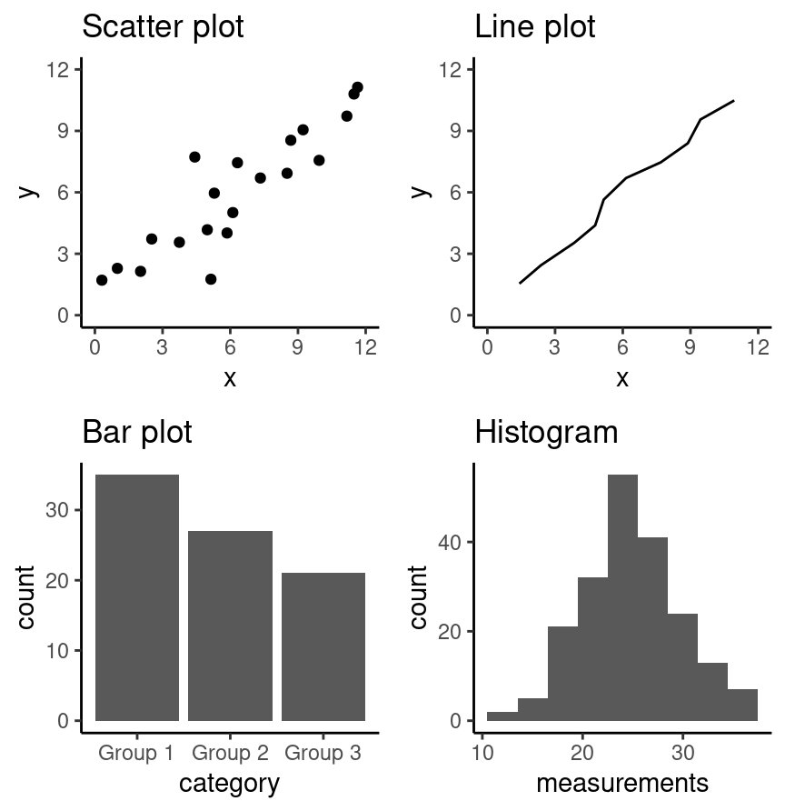
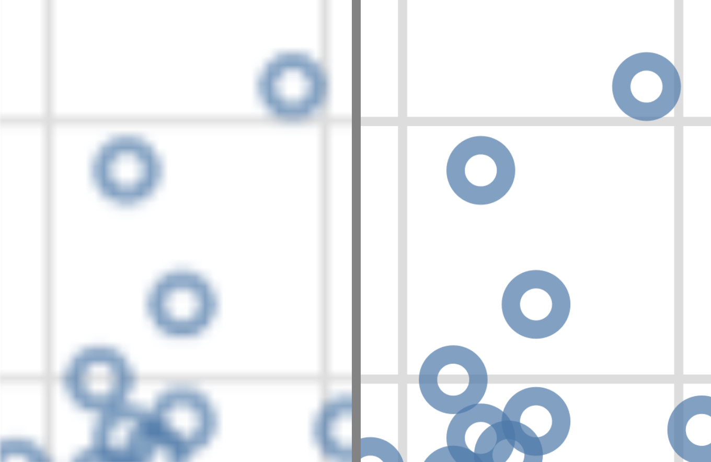

4. 有效的数据可视化#
4.1. 概述#
本章介绍数据可视化的概念与工具，内容超出我们目前已经见过和练习过的范围。我们会着重讲解有效数据可视化的指导原则，并说明数据可视化如何独立于任何特定工具或编程语言。在此过程中，还会涉及用 Python 为数据创建可视化图形的一些具体做法（散点图、条形图、折线图和直方图）。
4.2. 本章学习目标#
学完本章后，你将能够：
说明借助数据集回答具体问题时，何时该使用以下几种可视化：
散点图
折线图
条形图
直方图
给定一个数据集和一个问题，从上述图形类型中挑选合适的一种，用 Python 创建最能回答该问题的可视化。
评价一张可视化图形的效果，并提出改进建议，以便更好地回答给定的问题。
结合可视化图形，用非技术的语言表达得出的结论。
识别创建有效可视化的经验法则。
使用 Python 中的
altair库，借助以下要素创建并改进上述可视化：图形标记（graphical mark）：
mark_point、mark_line、mark_circle、mark_bar、mark_rule编码通道（encoding channel）：
x、y、color、shape标签：
title变换：
scale子图：
facet
说明
altair图形的两个关键要素：图形标记
编码通道
说明栅格图（raster graphics）与矢量图两种输出格式的区别。
使用
chart.save()把可视化图形保存为.png和.svg格式。
4.3. 选择可视化图形#
提出问题，并回答它
可视化的目的在于回答关于某个数据集的问题。因此，在创建可视化图形之前，首先要做的就是把你想要回答的、关于数据的问题表述清楚。好的可视化能不受干扰地清楚回答你的问题；出色的可视化甚至不需要额外解释，就能让人看出问题本身是什么。你可以把自己的可视化想象成项目海报展示的一部分：即使你没有站在海报前讲解，有效的可视化也能把你的信息传达给观众。
回想一下第 1 章中介绍的各种数据分析问题。用本章将要介绍的可视化方法，我们能够回答的只有描述性和探索性问题。请注意，不要用这里介绍的可视化去回答任何预测性、推断性、因果性或机理性问题，因为要恰当地回答这些问题所需的工具，我们还没有学过。
和大多数编程任务一样，在找到适合自己数据和问题的可视化之前，出错并迭代几次完全没问题（而且相当常见）。可用的绘图图形种类很多（目录可参见《Fundamentals of Data Visualization》的第 5 章 [Wilke, 2019]）。本书要介绍的图形类型见图 4.1；你应该选择哪一种，取决于你的数据和你想回答的问题。一般来说，何时该用哪类图形的指导原则如下：
散点图用来展示两个定量变量之间的关系
折线图用来展示相对于某个独立且有序的量（例如时间）的趋势
条形图用来展示数量之间的比较
直方图用来展示某个定量变量的分布（也就是它所有可能的取值，以及每个取值出现的频率）
{kind=link}

图 4.1 散点图、折线图和条形图以及直方图的示例。#
所有类型的可视化都有各自的用法（以及误用），但有三类通常难以理解，或者很容易被更好的做法取代。特别要避免使用饼图：一般来说用条形更好，因为比较条形的高度比比较饼图扇区的大小更容易。也不要使用三维可视化，因为把它们转换成静态的二维图像格式后，通常很难理解。最后，不要用表格做数值比较；人快速处理视觉信息的能力远胜于处理文字和数学。条形图通常又是更好的选择。
4.4. 改进可视化图形#
传达信息，减少噪声
仅仅能用 Python 和 altair（或任何其他工具）做出一张可视化图形，并不意味着它就能有效地把你的信息传达给别人。选定大致的可视化类型之后，你还得加以改进，让它符合自己的具体需要。下面列出了一些可用的经验法则。这些法则大致分为两类：你要让可视化图形传达你的信息，并且要尽可能减少视觉噪声。人处理信息的认知能力有限；这两类改进都是为了减轻观众观看可视化图形时的心理负担，让他们更容易快速理解并记住你的信息。
传达信息
确保可视化图形尽可能简单、直白地回答问题。
使用图例和标签，让别人不看周围的文字也能看懂你的可视化图形。
确保可视化图形上的文字、符号、线条等都足够大，容易看清。
确保数据清晰可见；不要把数据的形状或分布藏在其他对象（例如条形）后面。
确保使用色盲者也能看懂的配色方案（这部分人在总人口中的比例大得惊人——约 1% 到 10%，具体取决于性别和血统 [Deeb, 2005]）。例如，配色方案功能让你可以选择这类配色方案；图形画好之后，你还可以上传到色盲模拟器之类的在线工具进行检查。
冗余有时也有帮助：用多种方式传达同一条信息，能加深观众的印象。
减少噪声
少用颜色。颜色太多会分散注意力、制造出并不存在的模式，还会削弱信息的传达。
警惕标记重叠（overplotting）。标记重叠指的是表示数据的标记互相交叠，它的问题在于：在发生重叠的区域，你无法看出这里究竟表示了多少个数据点。如果图中的点或线太多，已经开始显得杂乱，就得换一种做法。
绘图区域（点、线和条形所在的区域）只做到需要的大小即可。简单的图形可以画得小一些。
不要调整坐标轴去放大微小的差异。差异小，就把它显示为小！
4.5. 用 altair 创建可视化图形#
迭代构建可视化图形
本节会给出一些示例，说明在给定数据集和待回答的问题时，如何选择和改进可视化图形，以及随后如何用 Python 和 altair 把它创建出来。要使用 altair 包，先得导入它。我们还会导入 pandas，用来读入数据。
import pandas as pd
import altair as alt
备注
本章的示例可视化都使用相对较小的数据集，所以用 altair 的默认设置就足够了。不过，如果你想用行数超过 5,000 的数据框绘图，altair 会报错。要绘制更大的数据集，最简单的做法是在导入 altair 包之后立刻启用 vegafusion 数据转换器：alt.data_transformers.enable("vegafusion")。这样最多可以绘制 100,000 个图形对象（例如含 100,000 个点的散点图）。要可视化更大的数据集，请参阅 altair 文档。
4.5.1. 散点图与折线图：冒纳罗亚 CO\(_{\text{2}}\) 数据集#
冒纳罗亚 CO\(_{\text{2}}\) 数据集由 NOAA/GML 的 Pieter Tans 博士和斯克里普斯海洋研究所的 Ralph Keeling 博士整理，记录了 1959 年以来夏威夷冒纳罗亚研究站大气中二氧化碳（CO\(_{\text{2}}\)，单位为百万分率）的浓度 [Tans and Keeling, 2020]。本书将重点关注 1980—2020 年。
**问题：**大气中 CO\(_{\text{2}}\) 的浓度会随时间变化吗？有没有值得注意的有趣模式？
首先读入并查看数据：
# mauna loa carbon dioxide data
co2_df = pd.read_csv(
"data/mauna_loa_data.csv",
parse_dates=["date_measured"]
)
co2_df
| date_measured | ppm | |
|---|---|---|
| 0 | 1980-02-01 | 338.34 |
| 1 | 1980-03-01 | 340.01 |
| 2 | 1980-04-01 | 340.93 |
| 3 | 1980-05-01 | 341.48 |
| 4 | 1980-06-01 | 341.33 |
| ... | ... | ... |
| 479 | 2020-02-01 | 414.11 |
| 480 | 2020-03-01 | 414.51 |
| 481 | 2020-04-01 | 416.21 |
| 482 | 2020-05-01 | 417.07 |
| 483 | 2020-06-01 | 416.39 |
484 rows × 2 columns
co2_df.info()
<class 'pandas.core.frame.DataFrame'>
RangeIndex: 484 entries, 0 to 483
Data columns (total 2 columns):
# Column Non-Null Count Dtype
--- ------ -------------- -----
0 date_measured 484 non-null datetime64[ns]
1 ppm 484 non-null float64
dtypes: datetime64[ns](1), float64(1)
memory usage: 7.7 KB
可以看到，co2_df 数据框中有两列：date_measured 和 ppm。date_measured 列保存测量的日期，类型是 datetime64。ppm 列保存每个日期测得的 CO\(_{\text{2}}\) 浓度，单位为百万分率，类型是 float64，这是小数的常见类型。
备注
read_csv 之所以能把 date_measured 列解析成 datetime 向量类型，是因为该列采用的是国际标准日期格式，即 ISO 8601，这种格式把日期写成 year-month-day，并且我们使用了 parse_dates=True。datetime 向量是一种具有特殊性质的 double 向量，能够正确处理日期。例如，datetime 类型向量允许 altair 之类的函数把它们当作数值日期处理，而不是当作字符向量，尽管其中包含非数字字符（例如 co2_df 数据框中 date_measured 列的取值）。这意味着 Python 不会不小心把日期按错误的顺序绘制出来（也就是说，不会像字符向量那样按字母数字顺序排列）。关于日期与时间的更多内容可以看这里。
我们要研究的是两个变量（CO\(_{\text{2}}\) 浓度和日期）之间的关系，所以从散点图入手比较合适。散点图把数据表示为一个个单独的点，每个点有 x（水平轴）和 y（垂直轴）坐标。这里我们用测量日期作为 x 坐标，用 CO\(_{\text{2}}\) 浓度作为 y 坐标。图形用 alt.Chart() 函数创建。创建图形时有几个基本方面需要指定：
要可视化的数据框名称。
这里我们把
co2_df数据框作为参数传给alt.Chart
图形标记，它规定映射后的数据应该如何显示。
创建图形标记要用
Chart.mark_*方法（图形标记的清单见 altair 参考文档）。这里我们用
mark_point函数把数据可视化为散点图。
编码通道，它告诉
altair数据框中的各列如何映射到图形中的视觉属性。创建编码要用
encode函数。encode方法在编码通道（例如 x、y）与数据集中的字段之间建立键值映射，字段通过字段名（列名）来访问这里我们把图形的
x轴设为date_measured变量，在y轴上绘制ppm变量。对 y 轴，我们还提供了方法
scale(zero=False)。默认情况下，altair根据数据选择 y 轴的上下界，并让y=0留在视野内。这往往是很有用的默认行为，但在这里，由于最小值大于 300 ppm，我们就很难看出数据中的任何趋势。于是我们提供scale(zero=False)，告诉 altair 根据数据选择一个合理的下界，这个下界不必是 0。要改变编码通道的属性，需要借助辅助函数
alt.Y和alt.X。这些辅助函数用来定制顺序、标题和标度等内容。这里我们用alt.Y改变 y 轴的取值范围，让它从date_measured列中的最小值开始，而不是从 0 开始。
co2_scatter = alt.Chart(co2_df).mark_point().encode(
x="date_measured",
y=alt.Y("ppm").scale(zero=False)
)
alt.Chart(...)
图 4.2 大气中 CO\(_{2}\) 的浓度随时间变化的散点图。#
图 4.2 中的可视化图形显示，大气中 CO\(_{\text{2}}\) 的浓度随时间有明显上升的趋势。这张图对我们问题的前半部分给出了肯定回答，但这似乎是从散点图中能得出的唯一结论。
关于这份数据，有一点很重要：我们要考察的变量之一是时间。时间是一类特殊的定量变量，因为它给数据加上了额外的结构——数据点有自然的先后顺序。具体来说，数据集中的每个观测都有前一个和后一个观测，观测的顺序很重要；改变顺序就会改变它们的含义。遇到这种情况，我们通常用折线图来可视化数据。折线图用线段把观测的 x 和 y 坐标依次连接起来，从而突出它们的顺序。
在 altair 中可以用 mark_line 函数创建折线图。现在我们试着只用默认参数把 co2_df 可视化为折线图：
co2_line = alt.Chart(co2_df).mark_line().encode(
x="date_measured",
y=alt.Y("ppm").scale(zero=False)
)
alt.Chart(...)
图 4.3 大气中 CO\(_{2}\) 的浓度随时间变化的折线图。#
啊哈！图 4.3 显示，数据中确实还有另一个有趣的现象：除了随时间上升，浓度似乎还在上下振荡。就目前的这张图而言，仍然很难判断振荡有多快，不过，回答我们的问题，折线似乎比散点图更合适。这两张图的对比还说明散点图有一个常见问题：点常常挨得太近，甚至互相叠在一起，把原本清楚的信息搅乱了（标记重叠）。
可视化的大致细节定下来之后，就该做改进了。这张图相当简单，没有多少视觉噪声需要去除。但为了提高清晰度，有几件事必须做，例如加上信息明确的坐标轴标签，并把字体调到更容易阅读的字号。添加坐标轴标签要用 title 方法配合 alt.X 和 alt.Y 函数。改变字号要用 configure_axis 函数，并指定 titleFontSize 参数。
co2_line_labels = alt.Chart(co2_df).mark_line().encode(
x=alt.X("date_measured").title("Year"),
y=alt.Y("ppm").scale(zero=False).title("Atmospheric CO2 (ppm)")
).configure_axis(titleFontSize=12)
alt.Chart(...)
图 4.4 大气中 CO\(_{2}\) 的浓度随时间变化的折线图，坐标轴和标签更清晰。#
备注
altair 中的 configure_* 函数还支持更多定制，例如调整图形大小、改变字体颜色，以及许多其他选项，可参见这里。
最后，我们看看能不能稍微改动一下图形，以便更好地理解这种振荡。请注意，用少量几张图来回答问题的不同侧面，完全没问题。为此我们要用到标度，这是 altair 的另一个重要特性，它可以方便地变换各个变量并设定界限。具体来说，这里我们用 alt.Scale 函数只放大几年的数据（比如 1990—1995 年）。domain 参数接收一个长度为 2 的列表，用来指定限制坐标轴的上下界。我们还给 mark_line 加上了 clip=True 参数。这告诉 altair 把设定取值范围之外的数据“裁剪”（删除）掉，使其不会延伸到绘图区域之外。由于我们在编码上同时使用了 scale 和 title 方法，所以把它们分行堆叠，让代码更易读。
co2_line_scale = alt.Chart(co2_df).mark_line(clip=True).encode(
x=alt.X("date_measured")
.scale(domain=["1990", "1995"])
.title("Measurement Date"),
y=alt.Y("ppm")
.scale(zero=False)
.title("Atmospheric CO2 (ppm)")
).configure_axis(titleFontSize=12)
alt.Chart(...)
图 4.5 1990 年至 1995 年大气中 CO\(_{2}\) 的浓度随时间变化的折线图。#
有意思！看来每年大气 CO\(_{\text{2}}\) 都会上升，在 4 月前后达到峰值，随后一直下降到 9 月下旬前后，然后又再次上升，直到年底。夏威夷有两个季节：5 月到 10 月是夏季，11 月到 4 月是冬季。因此，CO\(_{\text{2}}\) 的振荡模式与这两个季节相当吻合。
有一个很贴切的类比：构建数据可视化就像画一幅画。我们先准备一张空白画布，第一件事是给画布打底，为作画做好准备。在数据可视化中，这相当于调用 alt.Chart 并指定要用的数据集。接下来，我们勾画画面的背景。在数据可视化中，这相当于用 encode 函数把数据映射到坐标轴上。然后，我们把要表现的主要对象画进图中。在数据可视化中，这就是图形标记（例如 mark_point、mark_line 等）。最后，我们给画面添加细节和修饰。在数据可视化中，这就是微调坐标轴标签、改变字体、调整点的大小，以及做其他类似的事情。
4.5.2. 散点图：老忠实间歇泉的喷发时间数据集#
faithful 数据集收录了美国怀俄明州黄石国家公园老忠实间歇泉的测量值，包括两次喷发之间的等待时间，以及紧接着那次喷发的持续时间（单位为分钟）。首先读入数据，然后回答下面的问题：
**问题：**喷发前的等待时间与喷发的持续时间之间是否存在关系？
faithful = pd.read_csv("data/faithful.csv")
faithful
| eruptions | waiting | |
|---|---|---|
| 0 | 3.600 | 79 |
| 1 | 1.800 | 54 |
| 2 | 3.333 | 74 |
| 3 | 2.283 | 62 |
| 4 | 4.533 | 85 |
| ... | ... | ... |
| 267 | 4.117 | 81 |
| 268 | 2.150 | 46 |
| 269 | 4.417 | 90 |
| 270 | 1.817 | 46 |
| 271 | 4.467 | 74 |
272 rows × 2 columns
这里我们再次研究两个定量变量（等待时间和喷发时间）之间的关系。但如果你看看数据框的输出，就会注意到：与冒纳罗亚 CO\(_{\text{2}}\) 数据集中的时间不同，这里的两个变量都没有天然的先后顺序。所以散点图很可能是最合适的可视化方式。我们用 altair 包创建散点图，把 waiting 变量放在水平轴上，把 eruptions 变量放在垂直轴上，并用 mark_point 作为图形标记。结果见图 4.6。
faithful_scatter = alt.Chart(faithful).mark_point().encode(
x="waiting",
y="eruptions"
)
alt.Chart(...)
图 4.6 等待时间与喷发时间的散点图。#
从图 4.6 可以看出，数据倾向于分成两组：一组等待时间和喷发时间都短，另一组两者都长。请注意，这里没有出现标记重叠：各点总体上分得很清楚，形成的模式也很清晰。要改进这张图，我们只需加上坐标轴标签，并把字体调得更容易阅读。
faithful_scatter_labels = alt.Chart(faithful).mark_point().encode(
x=alt.X("waiting").title("Waiting Time (mins)"),
y=alt.Y("eruptions").title("Eruption Duration (mins)")
)
alt.Chart(...)
图 4.7 等待时间与喷发时间的散点图，坐标轴和标签更清晰。#
指定 mark_point(size=10, color="black") 可以改变点的大小和图形的颜色。
faithful_scatter_labels_black = alt.Chart(faithful).mark_point(size=10, color="black").encode(
x=alt.X("waiting").title("Waiting Time (mins)"),
y=alt.Y("eruptions").title("Eruption Duration (mins)")
)
alt.Chart(...)
图 4.8 等待时间与喷发时间的散点图，点用黑色标出。#
4.5.3. 坐标轴变换与彩色散点图：加拿大语言数据集#
回顾一下第 1 章、第 2 章与第 3 章中介绍过的
can_lang 数据集 [Timbers, 2020]。该数据集记录了 2016 年加拿大人口普查中各种语言的使用人数。
**问题：**把某种语言作为母语的人所占的百分比，与把该语言作为在家主要使用的语言的人所占的百分比之间，是否存在关系？这种关系的强度在更高层级的语言类别——官方语言、原住民语言（Aboriginal languages），以及非官方、非原住民语言——中是否呈现出某种模式？
我们先读取并查看这份数据：
can_lang = pd.read_csv("data/can_lang.csv")
can_lang
| category | language | mother_tongue | most_at_home | most_at_work | lang_known | |
|---|---|---|---|---|---|---|
| 0 | Aboriginal languages | Aboriginal languages, n.o.s. | 590 | 235 | 30 | 665 |
| 1 | Non-Official & Non-Aboriginal languages | Afrikaans | 10260 | 4785 | 85 | 23415 |
| 2 | Non-Official & Non-Aboriginal languages | Afro-Asiatic languages, n.i.e. | 1150 | 445 | 10 | 2775 |
| 3 | Non-Official & Non-Aboriginal languages | Akan (Twi) | 13460 | 5985 | 25 | 22150 |
| 4 | Non-Official & Non-Aboriginal languages | Albanian | 26895 | 13135 | 345 | 31930 |
| ... | ... | ... | ... | ... | ... | ... |
| 209 | Non-Official & Non-Aboriginal languages | Wolof | 3990 | 1385 | 10 | 8240 |
| 210 | Aboriginal languages | Woods Cree | 1840 | 800 | 75 | 2665 |
| 211 | Non-Official & Non-Aboriginal languages | Wu (Shanghainese) | 12915 | 7650 | 105 | 16530 |
| 212 | Non-Official & Non-Aboriginal languages | Yiddish | 13555 | 7085 | 895 | 20985 |
| 213 | Non-Official & Non-Aboriginal languages | Yoruba | 9080 | 2615 | 15 | 22415 |
214 rows × 6 columns
我们先为数据框中的 mother_tongue 列与 most_at_home 列画一张散点图。正如上一节的散点图所示，mark_point 默认只画出每个点的轮廓。如果想把点填充起来，可以给 mark_point 传入参数 filled=True，也可以直接使用简写 mark_circle。点要不要填充，主要取决于个人偏好，不过图中有很多点互相重叠时，空心点让人更容易看清每一个点。由此得到的图形见图 4.9。
can_lang_plot = alt.Chart(can_lang).mark_circle().encode(
x="most_at_home",
y="mother_tongue"
)
alt.Chart(...)
图 4.9 以某种语言为母语的加拿大人人数，与在家主要使用该语言的加拿大人人数之间的散点图。#
要初步提高图 4.9 的可解释性，我们应该把默认的坐标轴名称换成信息更明确的标签。要让图中的坐标轴标签更易读，可以把较长的标签分成多行显示。为此，我们把 title 写成一个字符串列表，列表中的每个字符串对应新的一行文字。我们还可以加大字号，进一步提高可读性。
can_lang_plot_labels = alt.Chart(can_lang).mark_circle().encode(
x=alt.X("most_at_home")
.title(["Language spoken most at home", "(number of Canadian residents)"]),
y=alt.Y("mother_tongue")
.scale(zero=False)
.title(["Mother tongue", "(number of Canadian residents)"])
).configure_axis(titleFontSize=12)
alt.Chart(...)
图 4.10 以某种语言为母语的加拿大人人数，与在家主要使用该语言的加拿大人人数之间的散点图，并带有 x 轴和 y 轴标签。#
很好！图 4.10 的坐标轴和标签现在清楚多了，也更容易解读。不过散点本身还有改进的空间：214 个数据点大多挤在图形的左下方。数据之所以挤成一团，是因为在加拿大讲英语或法语的人（也就是右上角的两个点）远多于讲其他语言的人。具体来说，最常用的母语有 19,460,850 名使用者，而最不常用的母语只有 10。这两个数字的大小相差六个数量级！我们可以筛选数据，确认右上角的这两个点对应的正是加拿大的两种官方语言：
can_lang.loc[
(can_lang["language"]=="English")
| (can_lang["language"]=="French")
]
| category | language | mother_tongue | most_at_home | most_at_work | lang_known | |
|---|---|---|---|---|---|---|
| 54 | Official languages | English | 19460850 | 22162865 | 15265335 | 29748265 |
| 59 | Official languages | French | 7166700 | 6943800 | 3825215 | 10242945 |
回忆一下，我们这个关于数据的问题涉及全部语言；所以要妥善回答这个问题，就需要调整坐标轴的标度，以便看清所有散点。具体来说，我们会把水平和垂直坐标轴改成对数（log）标度，以此改进这张图。数据中同时出现非常大和非常小的取值时，对数标度就很有用，因为它有助于把小的取值拉开、把大的取值压缩在一起。例如，\(\log_{10}(1) = 0\)、\(\log_{10}(10) = 1\)、\(\log_{10}(100) = 2\)，以及 \(\log_{10}(1000) = 3\)；在对数标度上，1、10、100 和 1000 这几个数值彼此间距完全相同！可见，做这种变换就是把大的取值拉近、把小的取值推远。请注意，如果你的数据可能取到 0，对数标度也许并不合适（因为在 Python 中 log10(0) 是 -inf）。这种情况下还有其他变换数据的方法，但已超出本书范围。
在 altair 可视化中，只要在 scale 方法里使用参数 type="log"，就能实现对数标度。
can_lang_plot_log = alt.Chart(can_lang).mark_circle().encode(
x=alt.X("most_at_home")
.scale(type="log")
.title(["Language spoken most at home", "(number of Canadian residents)"]),
y=alt.Y("mother_tongue")
.scale(type="log")
.title(["Mother tongue", "(number of Canadian residents)"])
).configure_axis(titleFontSize=12)
alt.Chart(...)
图 4.11 以某种语言为母语的加拿大人人数，与在家主要使用该语言的加拿大人人数之间的散点图，其中 x 轴和 y 轴已按对数调整。#
在上面的图中你会注意到两件事。把坐标轴改成对数后会产生很多刻度和网格线，让图形看起来相当杂乱，很难把注意力集中到数据上。你还会看到，x 轴上倒数第二个刻度标签不见了；Altair 之所以省掉它，是因为那些大数字并排放不下。另外也不容易判断 100,000,000 这个标签属于最后一个刻度还是倒数第二个刻度。要解决这些问题，我们可以把刻度和网格线的数量限制为只保留主要的七条，并把数字格式改成带后缀的形式，让标签更短。
can_lang_plot_log_revised = alt.Chart(can_lang).mark_circle().encode(
x=alt.X("most_at_home")
.scale(type="log")
.title(["Language spoken most at home", "(number of Canadian residents)"])
.axis(tickCount=7, format="s"),
y=alt.Y("mother_tongue")
.scale(type="log")
.title(["Mother tongue", "(number of Canadian residents)"])
.axis(tickCount=7, format="s")
).configure_axis(titleFontSize=12)
alt.Chart(...)
图 4.12 以某种语言为母语的加拿大人人数，与在家主要使用该语言的加拿大人人数之间的散点图，其中 x 轴和 y 轴已按对数调整。图中只显示主要的网格线。后缀“k”表示 1,000（“kilo”），而后缀“M”表示 1,000,000（“million”）。#
与第 3 章中的一些例子类似，我们可以把计数换算成百分比，为这些数字提供参照，也让它们更容易理解。做法是：把以某种语言为母语、或以该语言作为在家主要使用的语言的人数，除以居住在加拿大的人口数，再乘以 100%。例如，在 2016 年加拿大人口普查中报告自己的母语为英语的人所占百分比为 19,460,850 / 35,151,728 \(\times\) 100% = 55.36%
下面我们把以某种语言为母语的人所占百分比，与以该语言作为在家主要使用的语言的人所占百分比，分别赋给 can_lang 数据框中的两个新列。由于新列是追加在数据表末尾的，我们在变换之后选取了这两列，这样你能清楚地看到表格变换后的输出。请注意，我们把加拿大人口数用 _ 分隔书写，这样读起来更方便；这不会影响 Python 对这个数字的解释方式，仅仅是为了便于阅读。
canadian_population = 35_151_728
can_lang["mother_tongue_percent"] = can_lang["mother_tongue"]/canadian_population*100
can_lang["most_at_home_percent"] = can_lang["most_at_home"]/canadian_population*100
can_lang[["mother_tongue_percent", "most_at_home_percent"]]
| mother_tongue_percent | most_at_home_percent | |
|---|---|---|
| 0 | 0.001678 | 0.000669 |
| 1 | 0.029188 | 0.013612 |
| 2 | 0.003272 | 0.001266 |
| 3 | 0.038291 | 0.017026 |
| 4 | 0.076511 | 0.037367 |
| ... | ... | ... |
| 209 | 0.011351 | 0.003940 |
| 210 | 0.005234 | 0.002276 |
| 211 | 0.036741 | 0.021763 |
| 212 | 0.038561 | 0.020155 |
| 213 | 0.025831 | 0.007439 |
211 rows × 2 columns
接下来，我们修改可视化，改用刚算出的百分比（并相应调整坐标轴标签，以反映单位的变化）。最终结果见图 4.13。这里的刻度标签默认都能放下，所以我们没有给标签加后缀。请注意，后缀有时也更难理解，因此除非你的交流对象是技术背景的人，一般建议避免使用后缀（数值很小时尤其如此）。
can_lang_plot_percent = alt.Chart(can_lang).mark_circle().encode(
x=alt.X("most_at_home_percent")
.scale(type="log")
.axis(tickCount=7)
.title(["Language spoken most at home", "(percentage of Canadian residents)"]),
y=alt.Y("mother_tongue_percent")
.scale(type="log")
.axis(tickCount=7)
.title(["Mother tongue", "(percentage of Canadian residents)"]),
).configure_axis(titleFontSize=12)
alt.Chart(...)
图 4.13 以某种语言为母语的加拿大人所占百分比，与在家主要使用该语言的加拿大人所占百分比之间的散点图。#
图 4.13 正是回答本节第一个问题所要用的可视化，也就是：把某种语言作为母语的人所占百分比，与把该语言作为在家主要使用的语言的人所占百分比之间是否存在关系。要完整回答这个问题，我们需要借助图 4.13 来评估数据的几个关键特征：
方向： x 变量增大时 y 变量往往也增大，那么 y 与 x 就是正相关关系（positive relationship）。x 增大时 y 往往减小，那么 y 与 x 就是负相关关系。如果 x 增大时 y 没有明显的增大或减小，那么 y 与 x 几乎没有相关关系。
强度： x 增大时 y 变量稳定地增大、减小或保持不变，这种关系就是强相关关系；否则就是弱相关关系。直观地说，散点靠得比较近、整体看起来更像一条“线”或“曲线”而不是一团“云”时，这种关系就强。
形状：如果能大致沿着这些数据点画出一条直线，这种关系就是线性关系；否则就是非线性关系。
在图 4.13 中可以看到，把某种语言作为母语的人所占百分比越高，在家中讲这种语言的人所占百分比也越高。因此，这两个变量之间是正相关关系。此外，因为图 4.13 中的点相当集中，整体更像一条“线”而不是一团“云”，所以可以说这是一种强相关关系。最后，因为在图 4.13 中穿过这些点画一条直线能相当好地贴合我们观察到的模式，所以我们说这种关系是线性的。
接下来看探索性数据分析问题的第二部分！回忆一下，我们想知道在图 4.13 中发现的关系的强度，是否取决于更高层级的语言类别（官方语言、原住民语言，以及非官方、非原住民语言）。一种常见的探索方法，是给已经画好的散点图上的数据点按组着色。例如，既然 2016 年加拿大人口普查中记录的每种语言都有对应的更高层级语言类别，我们就可以给之前那张散点图上的点着色，以表示每种语言所属的更高层级语言类别。
这里我们要按取值所属的 category 组把它们区分开。我们可以在 encode 方法中加上 color 参数，指定用 category 列为点着色。加上这个参数后，点会按所属组着色，图的一侧也会出现图例。语言类别的标签本身已经说明了含义，所以我们可以删掉图例标题，这样既能减少视觉杂乱，又不会削弱图表的表达效果。
can_lang_plot_category=alt.Chart(can_lang).mark_circle().encode(
x=alt.X("most_at_home_percent")
.scale(type="log")
.axis(tickCount=7)
.title(["Language spoken most at home", "(percentage of Canadian residents)"]),
y=alt.Y("mother_tongue_percent")
.scale(type="log")
.axis(tickCount=7)
.title(["Mother tongue", "(percentage of Canadian residents)"]),
color="category"
).configure_axis(titleFontSize=12)
alt.Chart(...)
图 4.14 以某种语言为母语的加拿大人所占百分比，与在家主要使用该语言的加拿大人所占百分比之间的散点图，按语言类别着色。#
另一个可以调整的地方是图例的位置。这属于个人偏好，对可视化并不关键。我们用 alt.Legend 方法移动图例标题，并指定把它放在图形顶部。这样图例项会自动改成水平排列，而不是垂直排列，不过也可以在 alt.Legend 中指定 direction="vertical"，保留垂直排列。
can_lang_plot_legend = alt.Chart(can_lang).mark_circle().encode(
x=alt.X("most_at_home_percent")
.scale(type="log")
.axis(tickCount=7)
.title(["Language spoken most at home", "(percentage of Canadian residents)"]),
y=alt.Y("mother_tongue_percent")
.scale(type="log")
.axis(tickCount=7)
.title(["Mother tongue", "(percentage of Canadian residents)"]),
color=alt.Color("category")
.legend(orient="top")
.title("")
).configure_axis(titleFontSize=12)
alt.Chart(...)
图 4.15 以某种语言为母语的加拿大人所占百分比，与在家主要使用该语言的加拿大人所占百分比之间的散点图，按语言类别着色，并调整了图例。#
在图 4.15 中，点使用的是 altair 默认的配色方案 "tableau10"。这在多数情况下都是合适的选择，色觉减弱的人也容易分辨。一般来说，Altair 默认使用的配色方案会与所展示数据的类型相匹配，挑选时兼顾色觉正常和色觉减弱的人，让两者都容易解读。如果你对某个颜色搭配没有把握，可以使用这个色盲模拟器检查你的可视化对色盲是否友好。
全部可用的配色方案，以及如何创建自己的配色方案，都可以在 Altair 文档中查看。要更换图表的配色方案，我们可以在 color 编码的 scale 中加上 scheme 参数。下面我们选择 "dark2" 主题，结果见图 4.16。我们还把 shape 图形属性映射（aesthetic mapping）设到 category 变量上；这样每个语言类别的散点形状都不一样。这类视觉冗余（visual redundancy）——也就是用散点的颜色和形状同时传达同一信息——能进一步提高可视化的清晰度和可及性（accessibility），但如果形状和颜色种类太多，也会增加视觉噪声，所以要谨慎使用。请注意，这里我们改回使用 mark_point，因为 mark_circle 不支持 shape 编码，画出来的点永远是实心圆。
can_lang_plot_theme = alt.Chart(can_lang).mark_point(filled=True).encode(
x=alt.X("most_at_home_percent")
.scale(type="log")
.axis(tickCount=7)
.title(["Language spoken most at home", "(percentage of Canadian residents)"]),
y=alt.Y("mother_tongue_percent")
.scale(type="log")
.axis(tickCount=7)
.title(["Mother tongue", "(percentage of Canadian residents)"]),
color=alt.Color("category")
.legend(orient="top")
.title("")
.scale(scheme="dark2"),
shape="category"
).configure_axis(titleFontSize=12)
alt.Chart(...)
图 4.16 以某种语言为母语的加拿大人所占百分比，与在家主要使用该语言的加拿大人所占百分比之间的散点图，按语言类别着色，并使用自定义的颜色和形状。#
上图已经很好地展示了不同语言类别之间的差异，有了这些信息，就足以回答我们的研究问题了。但如果我们想知道图中每个点究竟对应哪一种语言，又该怎么办呢？用普通的可视化库做不到这一点，因为给每一种语言都单独加上文字标签会带来大量视觉噪声，让图表难以解读。不过，altair 是交互式可视化库，我们可以通过 Tooltip 编码通道按需添加信息：只要把鼠标指针悬停在某个点上，该点的文字标签就会显示出来。这里我们还会把 x 轴和 y 轴变量的确切取值也加进提示框。
can_lang_plot_tooltip = alt.Chart(can_lang).mark_point(filled=True).encode(
x=alt.X("most_at_home_percent")
.scale(type="log")
.axis(tickCount=7)
.title(["Language spoken most at home", "(percentage of Canadian residents)"]),
y=alt.Y("mother_tongue_percent")
.scale(type="log")
.axis(tickCount=7)
.title(["Mother tongue", "(percentage of Canadian residents)"]),
color=alt.Color("category")
.legend(orient="top")
.title("")
.scale(scheme="dark2"),
shape="category",
tooltip=alt.Tooltip(["language", "mother_tongue", "most_at_home"])
).configure_axis(titleFontSize=12)
alt.Chart(...)
图 4.17 以某种语言为母语的加拿大人所占百分比，与在家主要使用该语言的加拿大人所占百分比之间的散点图，按语言类别着色，并使用自定义的颜色和鼠标悬停提示框。#
从图 4.17 这张图可以清楚地看到，绝大多数加拿大人申报的母语，以及他们在家中说得最多的语言，都是某一种官方语言。再看探索性问题的后半部分，我们能发现什么？在不同高层级的语言类别中，把某种语言作为母语与作为在家主要使用的语言，这两种情况之间的关系是否存在差异？从图 4.17 来看，差异似乎不大。对每一个高层级的语言类别而言，把某种语言作为母语的人数占比，与把它作为在家主要使用的语言的人数占比之间，似乎都存在很强的正相关关系，而且这种关系呈线性。无论属于哪个类别，这种关系看起来都很相似。
这是否意味着，世界上所有语言的这种关系都是正相关的？更进一步说，如果已经知道有多少人把某种语言作为在家主要使用的语言，我们能否只凭这张数据可视化图就预测出有多少人把它作为母语？这两个问题的答案都是“不能！”不过，借助探索性数据分析，我们可以提出新的假设、新的想法和新的问题（就像本段开头那样）。回答这些问题往往要做更复杂的分析，有时甚至还要收集更多数据。本书后面还会看到更多这样的复杂分析。
4.5.4. 条形图：岛屿陆块数据集#
islands.csv 数据集收录了地球上的各个陆块及其面积（单位为千平方英里）[McNeil, 1977]。
**问题：**七大洲（北美洲、南美洲、非洲、欧洲、亚洲、澳大利亚和南极洲）是地球上最大的七个陆块吗？如果是，紧随其后的几个最大陆块又是哪些？
首先，我们读入并查看数据：
islands_df = pd.read_csv("data/islands.csv")
islands_df
| landmass | size | landmass_type | |
|---|---|---|---|
| 0 | Africa | 11506 | Continent |
| 1 | Antarctica | 5500 | Continent |
| 2 | Asia | 16988 | Continent |
| 3 | Australia | 2968 | Continent |
| 4 | Axel Heiberg | 16 | Other |
| 5 | Baffin | 184 | Other |
| 6 | Banks | 23 | Other |
| 7 | Borneo | 280 | Other |
| 8 | Britain | 84 | Other |
| 9 | Celebes | 73 | Other |
| 10 | Celon | 25 | Other |
| 11 | Cuba | 43 | Other |
| 12 | Devon | 21 | Other |
| 13 | Ellesmere | 82 | Other |
| 14 | Europe | 3745 | Continent |
| 15 | Greenland | 840 | Other |
| 16 | Hainan | 13 | Other |
| 17 | Hispaniola | 30 | Other |
| 18 | Hokkaido | 30 | Other |
| 19 | Honshu | 89 | Other |
| 20 | Iceland | 40 | Other |
| 21 | Ireland | 33 | Other |
| 22 | Java | 49 | Other |
| 23 | Kyushu | 14 | Other |
| 24 | Luzon | 42 | Other |
| 25 | Madagascar | 227 | Other |
| 26 | Melville | 16 | Other |
| 27 | Mindanao | 36 | Other |
| 28 | Moluccas | 29 | Other |
| 29 | New Britain | 15 | Other |
| 30 | New Guinea | 306 | Other |
| 31 | New Zealand (N) | 44 | Other |
| 32 | New Zealand (S) | 58 | Other |
| 33 | Newfoundland | 43 | Other |
| 34 | North America | 9390 | Continent |
| 35 | Novaya Zemlya | 32 | Other |
| 36 | Prince of Wales | 13 | Other |
| 37 | Sakhalin | 29 | Other |
| 38 | South America | 6795 | Continent |
| 39 | Southampton | 16 | Other |
| 40 | Spitsbergen | 15 | Other |
| 41 | Sumatra | 183 | Other |
| 42 | Taiwan | 14 | Other |
| 43 | Tasmania | 26 | Other |
| 44 | Tierra del Fuego | 19 | Other |
| 45 | Timor | 13 | Other |
| 46 | Vancouver | 12 | Other |
| 47 | Victoria | 82 | Other |
这里的数据框列出了地球上的各个陆块，我们要比较它们的大小。回答这个问题，合适的可视化方式是条形图。条形图中，每根条形的高度代表某个数量的取值（大小、计数、比例、百分比等）。比较分类变量各组的计数或比例时，条形图特别有用。不过要注意，条形图一般不宜用来展示均值或中位数，因为这样会掩盖数据变异的重要信息。更好的做法是展示所有单个数据点的分布，例如使用直方图，我们会在第 4.5.5 节中进一步讨论。
我们通过 altair 中的 mark_bar 函数指定使用条形图。结果见图 4.18。
islands_bar = alt.Chart(islands_df).mark_bar().encode(
x="landmass",
y="size"
)
alt.Chart(...)
图 4.18 地球各陆块大小的条形图。使用默认设置时图形太宽。#
好，还不错！图 4.18 中的图形肯定是对的可视化方式，我们能清楚地看到并比较各陆块的大小。主要问题在于，较小陆块的大小很难分辨，而且图形太宽，没法把它们放在一起比较！不过别忘了，我们问的问题只涉及最大的那些陆块；只保留最大的 12 个陆块，图形就能更清楚一些。我们用 nlargest 函数来做这件事：第一个参数是要保留的行数，第二个是用来比较大小的列名。为了让陆块名称更容易读，我们再交换 x 和 y 变量，把标签放到 y 轴上，这样就不用歪着头去读了。
备注
回想一下，在第 1 章中，我们用 sort_values 后接 head 取出了某个变量取值最大的十行。其实也可以改用 pandas 的 nlargest 函数。nsmallest 和 nlargest 函数与 sort_values 后接 head 的效果一样，但效率略高，因为它们是专门为此设计的。一般来说，只要有更专用的函数，就该优先使用！
islands_top12 = islands_df.nlargest(12, "size")
islands_bar_top = alt.Chart(islands_top12).mark_bar().encode(
x="size",
y="landmass"
)
alt.Chart(...)
图 4.19 地球最大的 12 个陆块各自大小的条形图。#
图 4.19 中的图形明显更清楚了，也能帮我们回答最初的问题：“七大洲是地球上最大的陆块吗？”以及“紧随其后的几个最大陆块是哪些？”不过，这张图还可以再改进：按各陆块是否属于大洲给条形着色，并按陆块大小而不是字母顺序排列条形。用于给条形着色的数据存放在 landmass_type 列中，所以我们把 color 编码设为 landmass_type。要按 size 变量排列陆块，我们会在图形的 y 编码通道中使用 altair 的 sort 函数。由于 size 变量编码在图形的 x 通道中，我们在 alt.Y 上指定 sort("x")。这样就会把 y 轴上的取值按 x 轴取值的升序绘制出来。于是得到的图形中，最长的条形最靠近坐标轴线，这通常是条形排序时视觉效果最好的做法。如果反过来想按 x-axis 的降序排列 y-axis 上的取值，可以加上一个负号反转顺序，写成 sort="-x"。
最后，我们用 title 方法定制坐标轴标签和图例标签，并通过指定 alt.Chart 的 title 参数给图形加上标题。图形标题并非总是必需的，尤其是当它与已有的图注或周围上下文重复时（例如在带注释的幻灯片里）。但如果你决定加上标题，好的图形标题应当给出你希望读者关注的核心信息，例如“地球上最大的七个陆块都是大洲”，或者对所展示信息做一个更概括的总结，例如“地球上最大的十二个陆块”。
islands_plot_sorted = alt.Chart(
islands_top12,
title="Earth's seven largest landmasses are continents"
).mark_bar().encode(
x=alt.X("size").title("Size (1000 square mi)"),
y=alt.Y("landmass").sort("x").title("Landmass"),
color=alt.Color("landmass_type").title("Type")
)
alt.Chart(...)
图 4.20 地球最大的 12 个陆块各自大小的条形图，按陆块类型着色，坐标轴和标签更清晰。#
图 4.20 中的图形现在可以有效地回答我们最初的问题了。陆块按大小排列，大洲和其他陆块的颜色不同，可以很清楚地看出，最大的七个陆块都是大洲。
4.5.5. 直方图：迈克尔逊光速数据集#
morley 数据集收录了 1879 年实验中测得的光速测量值。当时做了五次实验，每次实验又做了 20 轮——也就是说，每次实验都收集了 20 个光速测量值 [Michelson, 1882]。因为光速是很大的数（真值为 299,792.458 千米/秒），数据被编码成测得的光速减去 299,000。这样编码便于我们关注测量值的波动，这些波动通常远小于 299,000。如果直接使用完整的大数值光速测量值，测量值之间的波动就看不出来，也就难以研究各次实验之间的差异。
**问题：**已知我们现在对光速的了解（每秒 299,792.458 千米），各次实验的准确程度如何？
首先读入数据。
morley_df = pd.read_csv("data/morley.csv")
morley_df
| Expt | Run | Speed | |
|---|---|---|---|
| 0 | 1 | 1 | 850 |
| 1 | 1 | 2 | 740 |
| 2 | 1 | 3 | 900 |
| 3 | 1 | 4 | 1070 |
| 4 | 1 | 5 | 930 |
| ... | ... | ... | ... |
| 95 | 5 | 16 | 940 |
| 96 | 5 | 17 | 950 |
| 97 | 5 | 18 | 800 |
| 98 | 5 | 19 | 810 |
| 99 | 5 | 20 | 870 |
100 rows × 3 columns
在这份实验数据中，迈克尔逊要测量的只是一个定量数值（光速）。该数据集包含这个量的许多测量值。要判断各次实验的准确程度，就需要把测量值的分布可视化（也就是它们所有可能的取值，以及每个取值出现了多少次）。这可以用直方图来做。直方图把取值划分到各个箱中，再用竖条显示每个箱里落入了多少个数据点，从而帮助我们观察某个变量在数据集中的分布。
要了解如何在 altair 中绘制直方图，我们先像上一节那样画一张条形图。注意这一次我们把 y 编码设为 "count()"。morley_df 里并没有名为 "count()" 的列；我们用 "count()" 告诉 altair，我们希望统计 x 轴上每个取值出现的次数（x 轴编码的是 Speed 列）。
morley_bars = alt.Chart(morley_df).mark_bar().encode(
x="Speed",
y="count()"
)
alt.Chart(...)
图 4.21 迈克尔逊光速数据的条形图。#
上面的条形图能提示哪些取值比其他取值更常见，但条形太细，很难看出数据的整体分布。我们其实并不关心每个确切的 Speed 取值出现了多少次，而是关心大多数 Speed 取值大体落在什么位置。要更有效地传达这些信息，我们可以用 bin 方法把 x 轴划分成若干个箱，也就是“分组区间”，然后统计每个箱里落入多少个 Speed 取值。对分箱后的定量变量统计取值个数而画出的条形图，就叫做直方图。
morley_hist = alt.Chart(morley_df).mark_bar().encode(
x=alt.X("Speed").bin(),
y="count()"
)
alt.Chart(...)
图 4.22 迈克尔逊光速数据的直方图。#
为 altair 图形叠加图层#
图 4.22 是个很好的开始。不过，除非能看到真值，否则用这张图无法判断测量有多准确。为了把真实光速可视化，我们用 mark_rule 函数加上一条竖线。要用 mark_rule 画竖线，需要指定这条线画在 x 轴上的哪个位置。这可以通过 x=alt.datum(792.458) 来实现，其中 792.458 是真实光速减去 299,000 的结果，而 alt.datum 告诉 altair，我们要绘制的是一个单独的数据取值（数字），而不是数据框中的某一列。类似地，用 y 轴编码并传入只含单个取值的数据框，就能画出水平线，这个取值就是 y 轴截距。请注意，竖线用来标示横轴上的量，而横线用来标示纵轴上的量。
要微调这条竖线的外观，可以用 strokeDash=[5] 把它从实线改成虚线，其中 5 表示每一段虚线的长度。我们还可以用 size=2 改变线的粗细。为了把虚线叠加到直方图上，我们用 + 运算符把 mark_rule 图形添加到 morley_hist 上。用 + 运算符给图形添加内容，在 altair 中叫做图层叠加。这是 altair 的强大特性：你可以不断迭代同一张图，一次叠加一个图层并逐步改进。如果你已经用赋值符号（=）把图形存成了变量，就可以用 + 运算符在它上面继续添加。下面我们把用 mark_rule 创建的竖线加到前面创建的 morley_hist 上。
备注
严格来说，创建这条竖线时本来可以省略 data 参数，因为我们并没有用到 morley_df 数据框中的任何取值；但后面给这张叠加图层后的图形分面时还会用到它，所以这里就先写上了。
v_line = alt.Chart(morley_df).mark_rule(strokeDash=[6], size=1.5).encode(
x=alt.datum(792.458)
)
morley_hist_line = morley_hist + v_line
alt.LayerChart(...)
图 4.23 迈克尔逊光速数据的直方图，并用竖线标出真实光速。#
在图 4.23 中，我们仍然看不出哪些测量值来自哪次实验（实验由 Expt 列标示），也许有的实验比其他实验更准确。要完整回答我们的问题，就得在图上把这些测量值彼此区分开。可以尝试用带颜色的直方图，把不同实验的计数以不同颜色堆叠在一起。只要把 Expt 变量加到 color 参数上，就能画出按它着色的直方图。
morley_hist_colored = alt.Chart(morley_df).mark_bar().encode(
x=alt.X("Speed").bin(),
y="count()",
color="Expt"
)
morley_hist_colored = morley_hist_colored + v_line
alt.LayerChart(...)
图 4.24 迈克尔逊光速数据的直方图，按实验着色。#
好，图 4.24 看起来……等等！我们没法轻易区分直方图中不同实验的颜色！这是怎么回事？回想一下第 3 章的内容：你为每个变量选择的数据类型会影响 Python 和 altair 处理它的方式。这里，morley 数据框中的数据类型确实有问题。具体来说，Expt 列目前是整数，准确地说是 int64 类型。但我们希望把它当作类别来处理，也就是说，每种实验类型应该对应一个类别。
morley_df.info()
<class 'pandas.core.frame.DataFrame'>
RangeIndex: 100 entries, 0 to 99
Data columns (total 3 columns):
# Column Non-Null Count Dtype
--- ------ -------------- -----
0 Expt 100 non-null int64
1 Run 100 non-null int64
2 Speed 100 non-null int64
dtypes: int64(3)
memory usage: 2.5 KB
要解决这个问题，我们可以在 Expt 变量后面加上后缀 :N，把它转换成 nominal（即分类）类型的变量。给 Expt 加上 :N 后缀能确保 altair 把该变量当作分类变量处理，从而在可视化中使用离散的配色方案（关于数据类型的更多说明见 altair 文档）。我们还在 y 编码上调用 stack(False) 方法，让条形不再互相堆叠，而是共用同一条基线。不同颜色的条形会互相遮挡，为了尽量让它们都能看清，我们把 mark_bar 中的 opacity 参数设为 0.5，让条形略微半透明。
morley_hist_categorical = alt.Chart(morley_df).mark_bar(opacity=0.5).encode(
x=alt.X("Speed").bin(),
y=alt.Y("count()").stack(False),
color="Expt:N"
)
morley_hist_categorical = morley_hist_categorical + v_line
alt.LayerChart(...)
图 4.25 迈克尔逊光速数据的直方图，把实验当作分类变量着色。#
遗憾的是，想用颜色把实验编号区分开，结果弄得有些混乱。图 4.25 里的所有颜色都混在了一起；虽然仍能从中得出一些认识（例如实验 1 和实验 3 中有一些测量值的偏差最大），但这并不是传达信息、回答问题的最清晰方式。我们换一种策略：把直方图排成一张网格，每格放一个子图。
我们可以用 facet 函数创建由多个子图按网格排列而成的图。facet 的参数指定用一个或多个变量把图形拆分成子图（下面代码中的 Expt），以及网格中应有多少列。本例中我们选择把子图排成一列（columns=1），因为这样更容易比较不同子图里直方图在 x 轴上的位置。我们还降低了每张图的高度，好让它们都能放进同一个视图。请注意，我们复用了上面刚创建的那张图，而不是从头重新创建一张同样的图。我们还显式声明 facet 用的是分类变量，因为分面只应针对分类变量来做。
morley_hist_facet = morley_hist_categorical.properties(
height=100
).facet(
"Expt:N",
columns=1
)
alt.FacetChart(...)
图 4.26 按实验纵向拆分的迈克尔逊光速数据直方图。#
图 4.26 中的可视化清楚地表明各个实验彼此之间有多准确。测量值波动最大的是实验 1，其测量值大致在 650—1050 km/sec 之间。测量值波动最小的是实验 2，其测量值大致在 750—950 km/sec 之间。差别最大的几个实验，总体上仍然得到了相当接近的结果！
要让这张图更清楚，还有三处收尾工作。首先，也是最重要的，是用 alt.X 和 alt.Y 函数加上有信息量的坐标轴标签，并用 configure_axis 函数调大字号以保持清晰可读。我们还可以加一个标题；对 facet 图来说，只要把 title 传给 facet 函数即可。最后一点也许最不易察觉：在这张图上，虽然很容易把各个实验互相比较，却很难体会所有实验总体上到底有多准确。例如，图上 800 这个值相对于真实光速到底有多准确？为了回答这个问题，我们要把数据转换成相对误差，而不是绝对测量值。
speed_of_light = 299792.458
morley_df["RelativeError"] = (
100 * (299000 + morley_df["Speed"] - speed_of_light) / speed_of_light
)
morley_df
| Expt | Run | Speed | RelativeError | |
|---|---|---|---|---|
| 0 | 1 | 1 | 850 | 0.019194 |
| 1 | 1 | 2 | 740 | -0.017498 |
| 2 | 1 | 3 | 900 | 0.035872 |
| 3 | 1 | 4 | 1070 | 0.092578 |
| 4 | 1 | 5 | 930 | 0.045879 |
| ... | ... | ... | ... | ... |
| 95 | 5 | 16 | 940 | 0.049215 |
| 96 | 5 | 17 | 950 | 0.052550 |
| 97 | 5 | 18 | 800 | 0.002516 |
| 98 | 5 | 19 | 810 | 0.005851 |
| 99 | 5 | 20 | 870 | 0.025865 |
100 rows × 4 columns
morley_hist_rel = alt.Chart(morley_df).mark_bar().encode(
x=alt.X("RelativeError")
.bin()
.title("Relative Error (%)"),
y=alt.Y("count()").title("# Measurements"),
color=alt.Color("Expt:N").title("Experiment ID")
)
# Recreating v_line to indicate that the speed of light is at 0% relative error
v_line = alt.Chart(morley_df).mark_rule(strokeDash=[6], size=1.5).encode(
x=alt.datum(0)
)
morley_hist_relative = (morley_hist_rel + v_line).properties(
height=100
).facet(
"Expt:N",
columns=1,
title="Histogram of relative error of Michelson’s speed of light data"
)
alt.FacetChart(...)
图 4.27 按实验纵向拆分的相对误差直方图，坐标轴和标签更清晰。#
哇，真了不起！这些 1879 年的光速测量结果，误差只有真实光速的 0.05% 左右。图 4.27 告诉你：虽然实验 2 和实验 5 也许最为准确，但考虑到当时的可用技术，所有实验都做得相当出色。
为直方图选择箱宽#
在 altair 中创建直方图时，它会尝试选择一个合理的箱数。我们可以用 bin 方法里的 maxbins 参数来改变箱数。
morley_hist_maxbins = alt.Chart(morley_df).mark_bar().encode(
x=alt.X("RelativeError").bin(maxbins=30),
y="count()"
)
alt.Chart(...)
图 4.28 迈克尔逊光速数据的直方图。#
可是，箱数取多少才合适呢？很遗憾，正确的箱数或箱宽并没有硬性规则。这完全取决于你要解决的问题；正确的箱数或箱宽，就是能帮你回答所提问题的那个。为你要解决的问题选出合适的设置，往往需要反复迭代。通常值得多试几个不同的 maxbins，看看在你想回答的问题背景下，哪一个最能清楚地呈现数据。
为了体会不同分箱方式对可视化的影响，我们就用本节一直在处理的这张直方图来做实验。在图 4.29 中，我们把默认设置与另外三张直方图作比较，后者的 maxbins 分别设为 200、70 和 5。在这里可以看到，默认箱数和 maxbins=70 都能有效地帮助我们回答问题。另一方面，maxbins=200 和 maxbins=5 分别过小和过大。
alt.VConcatChart(...)
图 4.29 不同 maxbins 取值对直方图的影响。#
4.6. 讲解可视化#
讲一个故事
通常情况下，你的可视化不会完全独立出现，而会是更大规模演示的一部分。此外，可视化可以为演示的任何环节提供辅助信息，从开场到结论都可以。例如，你可以在演示开场时用一张探索性可视化图，说明自己为什么选择更细致的数据分析或模型；也可以用一张分析结果的可视化图，展示分析发现了什么；甚至可以在演示结尾放一张图，为今后的工作方向提供建议。
无论在什么地方出现，讨论可视化的一个好办法是把它当成一个故事来讲：
交代背景和范围，说明你为什么做这件事。2) 提出你的可视化要回答的问题，并说明为什么这个问题值得回答。3) 用你的可视化回答这个问题。务必描述可视化的所有方面（包括描述坐标轴）。但你可以根据回答问题的需要，突出不同的方面：
**趋势（折线图）：**直线能很好地描述趋势吗？如果能，趋势就是线性的；如果不能，趋势就是非线性的。趋势是上升、下降，还是两者都不是？趋势中是否有周期性振荡（摆动）？趋势是有噪声的（也就是线条频繁“跳来跳去”）还是平滑的？
**分布（散点图、直方图）：**数据的离散程度如何？大致以哪里为中心？有没有明显的“簇”或“子组”，在直方图上会表现为多个峰？
**两个变量的分布（散点图）：**变量之间的关系是清晰 / 强的（点落在明显的模式中）、弱的（点落在某种模式中但带有一些噪声），还是看不出关系（数据噪声太大，无法得出任何结论）？
**数量（条形图）：**各条形彼此相比有多大？不同组的条形中是否有模式？4) 总结你的发现，并用它们引出你接下来要讲的内容。
下面用两个例子说明，如何按这四个步骤讲解本章前面出现过的示例可视化。每一步都用括号中的编号标出，例如（3）。
冒纳罗亚大气 CO\(_{\text{2}}\) 测量数据：（1）当前许多形式的能源生产与转换——从汽车发动机到天然气发电厂——都依赖燃烧化石燃料，并产生温室气体作为副产物，其中通常主要是二氧化碳（CO\(_{\text{2}}\)）。这些气体在地球大气中过多，就会使大气截留更多来自太阳的热量，导致全球变暖。（2）为了评估大气中 CO\(_{\text{2}}\) 浓度上升得有多快，我们（3）使用了夏威夷冒纳罗亚观测站的一套数据，其中包含 1980 年到 2020 年的 CO\(_{\text{2}}\) 测量值。我们把测得的 CO\(_{\text{2}}\) 浓度画在纵轴上，把时间画在横轴上。从这张图可以看到，随时间推移存在清晰、上升、总体呈线性的趋势。图中还有每年发生一次、与夏威夷季节相吻合的周期性振荡，其振幅相对于整体趋势的增长很小。这说明大气中的 CO\(_{\text{2}}\) 显然在随时间上升，（4）也许值得进一步研究其中的成因。
迈克尔逊光速实验：（1）与 19 世纪末相比，我们对光物理的现代认识已经进步了很多；当年迈克尔逊和莫雷的实验首次证明光速是有限的。根据现代实验，我们现在知道光的传播速度约为每秒 299,792.458 千米。（2）但是，我们最初测量这个基本物理常数的准确程度如何？某些实验是否比另一些实验得到了更准确的结果？（3）为了更好地理解这一点，我们把迈克尔逊在 1879 年所做的 5 次实验的数据画成彼此堆叠的直方图，每次实验有 20 轮试验。横轴表示测量值相对于我们今天所知真实光速的误差，用百分比表示。从这张图可以看到，大多数结果的相对误差至多为 0.05%。你还能看到，实验 1 和实验 3 的测量值离真实值最远，而实验 5 往往给出最稳定的准确结果。（4）值得进一步研究这些实验之间的差异，看看它们为什么会产生不同的结果。
4.7. 保存可视化#
按需要选择合适的输出格式
正如存储数据集有很多方式一样，存储可视化和图像也有很多方式。该选哪一种取决于若干因素，例如文件大小或类型的限制（比如把可视化作为会议论文的一部分提交，或送到海报打印店），以及它将在哪里显示（例如网上、论文中、海报上、广告牌上、报告幻灯片里）。一般来说，图像分为两大类：栅格格式和矢量格式。
栅格图像表示成由正方形像素组成的二维网格，每个像素有各自的颜色。栅格图像在存储前往往要先压缩，以占用更少的空间。如果图像在加载和显示时无法被完美重建，这种压缩格式就是有损的，只是希望这种变化不易察觉。相反，无损格式可以完美地显示原始图像。
常见文件类型：
开源软件： GIMP
矢量图像表示成一组数学对象（直线、曲面、形状、曲线）。计算机显示图像时，会用这些对象的数学公式重新绘制所有元素。
栅格图像和矢量图像的优缺点正好相反。宽高固定的栅格图像，无论显示什么内容，占用的空间和加载时间都相同（唯一的例外是：对某些图像，压缩算法可能把文件压得更小，或者运行得更快）。矢量图像占用的空间和加载时间取决于图像的复杂程度，因为每次显示时计算机都要重新绘制所有元素。例如，把包含 100 万个点的散点图存成 SVG 文件，你的计算机可能要花一些时间才能打开。反过来，矢量图可以随意放大 / 缩放，画面都不会变差；而栅格图像放大到一定程度就会显得“像素化”。
备注
可移植文档格式 PDF（.pdf）常用来同时存储栅格和矢量两种格式。如果你打开一个 PDF 时发现加载很久，可能是因为其中有一张复杂的矢量图，正由你的计算机渲染。
下面我们学习如何把图形保存成 .png 和 .svg 文件格式。这里用的例子是前面创建的 faithful_scatter_labels 散点图，它来自老忠实间歇泉数据集 [Hardle, 1991]，见图 4.7。要把图形保存到文件，可以用 save 方法。save 方法接收保存文件的路径（例如 img/viz/filename.png 表示把名为 filename.png 的文件保存到 img/viz/ 目录）。保存成哪种图像由文件扩展名决定。例如，要创建 PNG 图像文件，就把文件扩展名指定为 .png。下面演示如何把 faithful_scatter_labels 图保存成 PNG 和 SVG 两种文件类型。
faithful_scatter_labels.save("img/viz/faithful_plot.png")
faithful_scatter_labels.save("img/viz/faithful_plot.svg")
---------------------------------------------------------------------------
ModuleNotFoundError Traceback (most recent call last)
File D:\Translation\Data Science A First Introduction with Python\.venv-build\lib\site-packages\pandas\compat\_optional.py:135, in import_optional_dependency(name, extra, errors, min_version)
134 try:
--> 135 module = importlib.import_module(name)
136 except ImportError:
File ~\AppData\Local\Programs\Python\Python310\lib\importlib\__init__.py:126, in import_module(name, package)
125 level += 1
--> 126 return _bootstrap._gcd_import(name[level:], package, level)
File <frozen importlib._bootstrap>:1050, in _gcd_import(name, package, level)
File <frozen importlib._bootstrap>:1027, in _find_and_load(name, import_)
File <frozen importlib._bootstrap>:1004, in _find_and_load_unlocked(name, import_)
ModuleNotFoundError: No module named 'pyarrow'
During handling of the above exception, another exception occurred:
ImportError Traceback (most recent call last)
Cell In[73], line 1
----> 1 faithful_scatter_labels.save("img/viz/faithful_plot.png")
2 faithful_scatter_labels.save("img/viz/faithful_plot.svg")
File D:\Translation\Data Science A First Introduction with Python\.venv-build\lib\site-packages\altair\vegalite\v6\api.py:2420, in TopLevelMixin.save(self, fp, format, override_data_transformer, scale_factor, mode, vegalite_version, vega_version, vegaembed_version, embed_options, json_kwds, engine, inline, **kwargs)
2418 if override_data_transformer:
2419 with data_transformers.disable_max_rows():
-> 2420 save(**kwds)
2421 else:
2422 save(**kwds)
File D:\Translation\Data Science A First Introduction with Python\.venv-build\lib\site-packages\altair\utils\save.py:276, in save(chart, fp, vega_version, vegaembed_version, format, mode, vegalite_version, embed_options, json_kwds, scale_factor, engine, inline, **kwargs)
271 if using_vegafusion():
272 # When the vegafusion data transformer is enabled, transforms will be
273 # evaluated during save and the resulting data will be included in the
274 # vega specification that is saved.
275 with data_transformers.disable_max_rows():
--> 276 perform_save()
277 else:
278 # Temporarily turn off any data transformers so that all data is inlined
279 # when calling chart.to_dict. This is relevant for vl-convert which cannot access
280 # local json files which could be created by a json data transformer. Furthermore,
281 # we don't exit the with statement until this function completed due to the issue
282 # described at https://github.com/vega/vl-convert/issues/31
283 with data_transformers.enable("default"), data_transformers.disable_max_rows():
File D:\Translation\Data Science A First Introduction with Python\.venv-build\lib\site-packages\altair\utils\save.py:251, in save.<locals>.perform_save()
249 write_file_or_filename(fp, json_spec, mode="w", encoding=encoding)
250 elif format in {"html", "png", "svg", "pdf", "vega"}:
--> 251 _save_mimebundle_format(
252 spec=spec,
253 format=format,
254 fp=fp,
255 inner_mode=inner_mode,
256 vega_version=vega_version,
257 vegalite_version=vegalite_version,
258 vegaembed_version=vegaembed_version,
259 embed_options=embed_options,
260 json_kwds=json_kwds,
261 encoding=encoding,
262 scale_factor=scale_factor,
263 engine=engine,
264 inline=inline,
265 **kwargs,
266 )
267 else:
268 msg = f"Unsupported format: '{format}'"
File D:\Translation\Data Science A First Introduction with Python\.venv-build\lib\site-packages\altair\utils\save.py:111, in _save_mimebundle_format(spec, format, fp, inner_mode, vega_version, vegalite_version, vegaembed_version, embed_options, json_kwds, encoding, scale_factor, engine, inline, **kwargs)
109 write_file_or_filename(fp, mb_result["text/html"], mode="w", encoding=encoding)
110 elif format == "png":
--> 111 mb_result_png: tuple[dict[str, Any], dict[str, Any]] = spec_to_mimebundle(
112 spec=spec,
113 format=format,
114 mode=inner_mode,
115 vega_version=vega_version,
116 vegalite_version=vegalite_version,
117 vegaembed_version=vegaembed_version,
118 embed_options=embed_options,
119 scale_factor=scale_factor,
120 engine=engine,
121 **kwargs,
122 )
123 write_file_or_filename(fp, mb_result_png[0]["image/png"], mode="wb")
124 elif format == "svg":
File D:\Translation\Data Science A First Introduction with Python\.venv-build\lib\site-packages\altair\utils\mimebundle.py:124, in spec_to_mimebundle(spec, format, mode, vega_version, vegaembed_version, vegalite_version, embed_options, engine, **kwargs)
122 internal_mode: Literal["vega-lite", "vega"] = mode
123 if using_vegafusion():
--> 124 spec = compile_with_vegafusion(spec)
125 internal_mode = "vega"
127 # Default to the embed options set by alt.renderers.set_embed_options
File D:\Translation\Data Science A First Introduction with Python\.venv-build\lib\site-packages\altair\utils\_vegafusion_data.py:273, in compile_with_vegafusion(vegalite_spec)
271 # Pre-evaluate transforms in vega spec with vegafusion
272 row_limit = data_transformers.options.get("max_rows", None)
--> 273 transformed_vega_spec, warnings = vf.runtime.pre_transform_spec(
274 vega_spec,
275 vf.get_local_tz(),
276 inline_datasets=inline_tables,
277 row_limit=row_limit,
278 )
280 # Check from row limit warning and convert to MaxRowsError
281 handle_row_limit_exceeded(row_limit, warnings)
File D:\Translation\Data Science A First Introduction with Python\.venv-build\lib\site-packages\vegafusion\runtime.py:414, in VegaFusionRuntime.pre_transform_spec(self, spec, local_tz, default_input_tz, row_limit, preserve_interactivity, inline_datasets, keep_signals, keep_datasets)
353 """
354 Evaluate supported transforms in an input Vega specification
355
(...)
411 were eligible for pre-transforming
412 """
413 local_tz = local_tz or get_local_tz()
--> 414 imported_inline_dataset = self._import_inline_datasets(
415 inline_datasets, get_inline_column_usage(spec)
416 )
418 new_spec, warnings = self.runtime.pre_transform_spec(
419 spec,
420 local_tz=local_tz,
(...)
426 keep_datasets=parse_variables(keep_datasets),
427 )
429 return new_spec, warnings
File D:\Translation\Data Science A First Introduction with Python\.venv-build\lib\site-packages\vegafusion\runtime.py:332, in VegaFusionRuntime._import_inline_datasets(self, inline_datasets, inline_dataset_usage)
329 raise ValueError(msg)
330 df_nw = df_nw.select(columns)
--> 332 imported_inline_datasets[name] = Table(df_nw)
333 except TypeError:
334 # Not supported by Narwhals, try pycapsule interface directly
335 if hasattr(value, "__arrow_c_stream__"):
File D:\Translation\Data Science A First Introduction with Python\.venv-build\lib\site-packages\narwhals\dataframe.py:819, in DataFrame.__arrow_c_stream__(self, requested_schema)
817 native_frame = self._compliant_frame._native_frame
818 if supports_arrow_c_stream(native_frame):
--> 819 return native_frame.__arrow_c_stream__(requested_schema=requested_schema)
820 try:
821 pa_version = Implementation.PYARROW._backend_version()
File D:\Translation\Data Science A First Introduction with Python\.venv-build\lib\site-packages\pandas\core\frame.py:1026, in DataFrame.__arrow_c_stream__(self, requested_schema)
1005 def __arrow_c_stream__(self, requested_schema=None):
1006 """
1007 Export the pandas DataFrame as an Arrow C stream PyCapsule.
1008
(...)
1024 PyCapsule
1025 """
-> 1026 pa = import_optional_dependency("pyarrow", min_version="14.0.0")
1027 if requested_schema is not None:
1028 requested_schema = pa.Schema._import_from_c_capsule(requested_schema)
File D:\Translation\Data Science A First Introduction with Python\.venv-build\lib\site-packages\pandas\compat\_optional.py:138, in import_optional_dependency(name, extra, errors, min_version)
136 except ImportError:
137 if errors == "raise":
--> 138 raise ImportError(msg)
139 return None
141 # Handle submodules: if we have submodule, grab parent module from sys.modules
ImportError: Missing optional dependency 'pyarrow'. Use pip or conda to install pyarrow.
图像类型 |
文件类型 |
图像大小 |
|---|---|---|
栅格 |
PNG |
0.07 MB |
矢量 |
SVG |
0.09 MB |
看看表 4.1 中的文件大小。哇，差别还真大！这里 .png 图像几乎比 .svg 图像小 4 倍。由于图中的点相当多，矢量图格式的 .svg 文件比只存储图像数据本身的栅格图像 .png 更大。在图 4.30 中，我们展示了放大到只有 3 个数据点的矩形区域时图像的样子。你就能明白矢量图格式为什么这么有用了：正因为它们只是基于数学公式，矢量图可以放大到任意尺寸。这使它们很适合各种尺寸的展示媒介，从论文到海报再到广告牌。
{kind=link}

图 4.30 放大后的 faithful 图，栅格格式（PNG，左）和矢量格式（SVG，右）。#
4.8. 习题#
本章内容的练习题可在配套的练习册仓库（worksheets repository）的“有效的数据可视化（Effective data visualization）”一行中找到。点击“查看练习册（view worksheet）”，即可预览本章练习册的非交互版本。若要交互式地完成这些习题，请按练习册仓库中的说明下载全部练习册，并按照第 13 章中的计算机配置说明做好准备。这样才能保证练习册提供的自动反馈和指导按预期发挥作用。
4.9. 拓展资源#
如果想进一步了解本章讲到的函数、可以使用的全部参数以及其他相关函数，可以查阅 altair 文档 [VanderPlas et al., 2018]。
《Fundamentals of Data Visualization》 [Wilke, 2019] 中有大量关于设计有效可视化的内容。这本书不针对任何特定的编程语言或库。如果你想提高自己的可视化能力，接下来就该看这本书。
如果想了解
date和time，包括如何创建它们，以及如何用它们有效地处理时长等，可以查阅《Python for Data Analysis》 [McKinney, 2012] 中关于日期与时间的那一章
4.10. 参考文献#
- Dee05
Sameer Deeb. The molecular basis of variation in human color vision. Clinical Genetics, 67:369–377, 2005.
- Har91
Wolfgang Hardle. Smoothing Techniques with Implementation in S. Springer, New York, 1991.
- McK12
Wes McKinney. Python for data analysis: Data wrangling with Pandas, NumPy, and IPython. " O'Reilly Media, Inc.", 2012.
- McN77
Donald R. McNeil. Interactive Data Analysis: A Practical Primer. Wiley, 1977.
- Mic82
Albert Michelson. Experimental determination of the velocity of light made at the United States Naval Academy, Annapolis. Astronomic Papers, 1:135–8, 1882.
- TK20
Pieter Tans and Ralph Keeling. Trends in atmospheric carbon dioxide. 2020. URL: https://gml.noaa.gov/ccgg/trends/data.html (visited on 2020-07-04).
- Tim20
Tiffany Timbers. canlang: Canadian Census language data. 2020. R package version 0.0.9. URL: https://ttimbers.github.io/canlang/.
- VGH+18
Jacob VanderPlas, Brian Granger, Jeffrey Heer, Dominik Moritz, Kanit Wongsuphasawat, Arvind Satyanarayan, Eitan Lees, Ilia Timofeev, Ben Welsh, and Scott Sievert. Altair: interactive statistical visualizations for python. Journal of Open Source Software, 3(32):1057, 2018. URL: https://doi.org/10.21105/joss.01057, doi:10.21105/joss.01057.
- Wil19(1,2)
Claus Wilke. Fundamentals of Data Visualization. O'Reilly Media, 2019. URL: https://clauswilke.com/dataviz/.